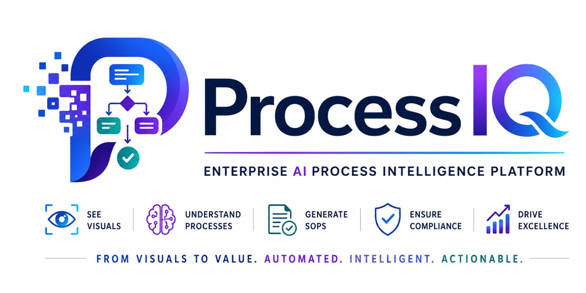

1 · Describe & Upload
Drag & drop screenshots
in workflow order · or click to browse
No screenshots yet.
2 · Generate SOP
Agent Trace
| Agent | Model | ms |
|---|
3 · Visual Perception

Upload screenshots and describe your process. ProcessIQ detects UI elements, understands the workflow, and generates a grounded, step-by-step SOP with the exact controls to click.
–
Steps
–
Confidence
–
State
4 · Generated SOP
Run the pipeline to generate an SOP.